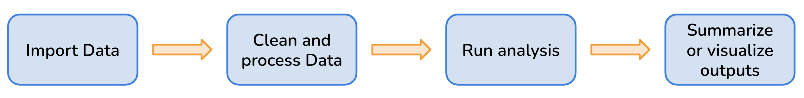
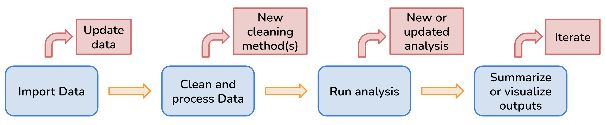
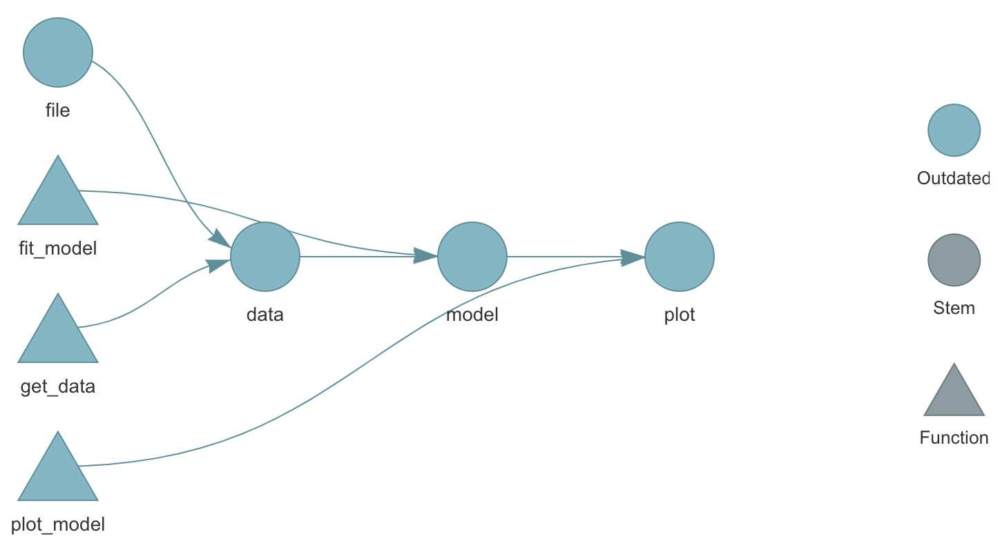
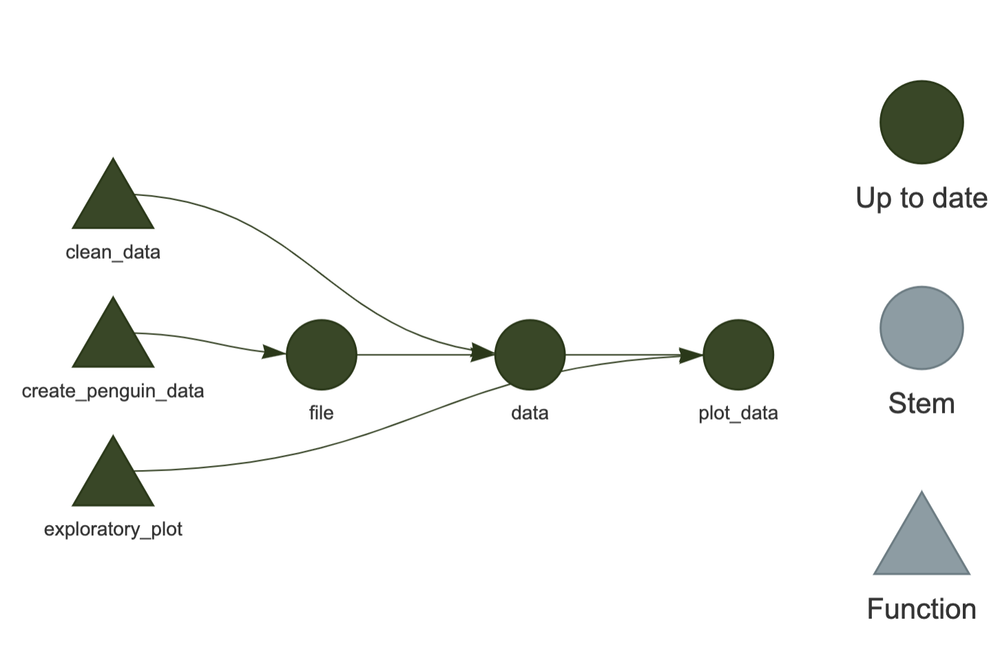

# targets syntax
list(
tar_target(name = first_target,
command = some_code),
tar_target(name = second_target,
command = some_code),
tar_target(name = third_target,
command = some_code),
)
# minimal example
list(
tar_target(name = read_data,
command = read_csv("path/to/data.csv")),
tar_target(name = clean_data,
command = my_cleaning_function(read_data)),
tar_target(name = analysis_model,
command = my_modeling_function(clean_data)),
)Learning Objectives
- Illustrate importance of utilizing reproducible workflows to increase project efficiency and sharing of analyses, as well as reducing computational resources.
- Apply the R package
targetsworkflow framework to scientific projects. - Organize projects in modular steps to improve understanding and computational flexibility.
8.1 Challenges of Workflows
All research projects have a workflow of some kind and typically includes steps like: data preparation and harmonization, running analyses or models, creating visualizations, and more.

However, many environmental research projects are becoming increasingly more complex as researchers are utilizing larger datasets that require complicated analytical methods. More complexity means more steps, and more room for error or poor organizational methods that make projects difficult to reproduce. More complex analysis may also mean longer run times, which can make updating functions and analysis time-consuming.

This is where reproducible workflow tools and packages, like the R package targets, can play a huge role in streamlining complex workflows and ease the organization and sharing of projects.
Other interchangeable terms for workflows are:
- Workflow Management Systems (WMS)
- Data pipelines
- Data workflow
8.2 Benefits of Reproducible Workflows
Using a reproducible workflow allows us to:
- track the status of all required files and functions which makes it easier to keep all steps in the overall workflow up-to-date (Brousil et al. 2023)
- break our analysis and data processing steps into smaller functions that are modular which results in more computational flexibility (Brousil et al. 2023) and makes it easier to debug when errors occur
- reduce the computational tasks to only run as necessary as opposed to anytime there is an update in on the steps in the workflow (Brousil et al. 2023)
- utilize continuous integration (automating tasks) so that we spend less time on manual work and are less prone to simple errors (e.g. misspellings) (Brousil et al. 2023)
Overall a reproducible workflow enhances our research projects because it improves our understanding of our work for ourselves and for collaborators, makes our work more efficient and automated, and increases reproducibility.
8.3 Leveraging targets for Reproducible Worklows
WMS or tools like targets may not be needed by most beginners, but learning about these tools give researchers the foundational capabilities to scale their projects in size and complexity. While it takes time to learn these tools to create reproducible workflows, it saves time and frustrations in the long run (Brousil et al. 2023).

targets using tar_visnetwork(). Source: The {targets} R package user manualWhat does the targets package do?
- Keeps track of entire workflow
- Automatically detects when files or functions change
- Saves time by only running steps, or targets, that are no longer up to date
- Ensures that the pipeline is run in the correct order (meaning you don’t have to keep track of this after you set it up the first time)
- Can integrate with high performance computing, like parallel processing
- Ensures reproducibility: When targets are up to date, this is evidence that the outputs match the code and inputs
- More trustworthy and reproducible results
How does the targets package work?
For targets to be successful, at a bare minimum it needs 1) a script with the different functions you’re using for analysis, and 2) a _targets.R script which is a special file that targets uses to coordinate, connect, and keep track of the steps in your workflow aka “targets”.
A good “target”:
- is a meaningful step in your workflow
- large enough to subtract a decent amount of runtime when skipped
- small enough that some targets can be skipped even if others need to run
The _targets.R script is where you define “targets” aka analysis steps. To define your targets, you do so using the list() and tar_targets() functions:
8.4 Exercise: Creating a Pipeline using targets
In this exercise, we are going to use the palmerpenguins data to recreate the pipeline below.

Code for functions.R
# create_penguin_data ----
create_penguin_data <- function(out_path) {
penguin_data <- palmerpenguins::penguins_raw %>% clean_names()
write_csv(penguin_data, out_path)
return(out_path)
} # EO penguin_data
# clean_data ----
clean_data <- function(file_path) {
clean_data <- read_csv(file_path) %>%
# keep only common species name
mutate(
species = str_extract(string = species,
pattern = "Chinstrap|Adelie|Gentoo"),
year = year(date_egg)
) %>%
# select cols of interest
select(species,
island,
flipper_length_mm,
body_mass_g,
sex) %>%
drop_na()
return(clean_data)
}
# exploratory_plot ----
exploratory_plot <- function(clean_data) {
ggplot(data = clean_data, aes(x = flipper_length_mm,
y = body_mass_g)) +
geom_point(aes(color = species)) +
scale_color_manual(values = c(
"Adelie" = "purple2",
"Chinstrap" = "orange",
"Gentoo" = "cyan4"
)) +
labs(
title = NULL,
x = "Flipper Length (mm)",
y = "Body Mass (g)",
color = "Species"
) +
theme_minimal()
ggsave("figs/exploratory_plot.png", width = 5, height = 5)
}Code for _targets.R
library(targets)
source("R/functions.R")
# Set target-specific options such as packages:
tar_option_set(packages = "tidyverse")
# End this file with a list of target objects.
list(
# create data
tar_target(name = file,
command = create_penguin_data(out_path = "data/penguin_data.csv"),
packages = c("readr", "janitor")),
# clean data
tar_target(name = data,
command = clean_data(file_path = file),
packages = c("readr", "dplyr", "tidyr", "stringr", "lubridate")),
# plot data
tar_target(name = plot_data,
command = exploratory_plot(clean_data = data),
packages = "ggplot2")
)8.5 Additional Resources
- The
targetsR Package User Manual by thetargetscreator Will Landau - Get started with
targetsin 4 minutes video by Will Landau
Brousil, Matthew R., Alessandro Filazzola, Michael F. Meyer, Sapna Sharma, and Stephanie E. Hampton. 2023. “Improving Ecological Data Science with Workflow Management Software.” Methods in Ecology and Evolution 14 (6): 1381–88. https://doi.org/10.1111/2041-210x.14113.